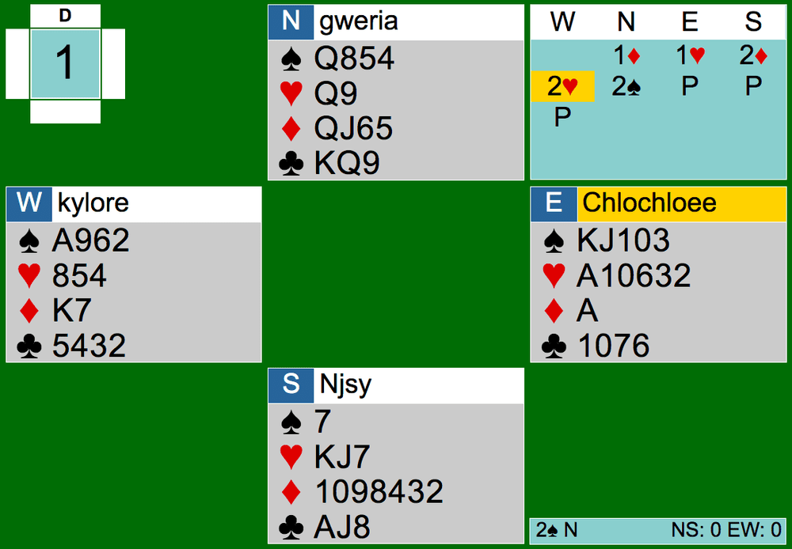
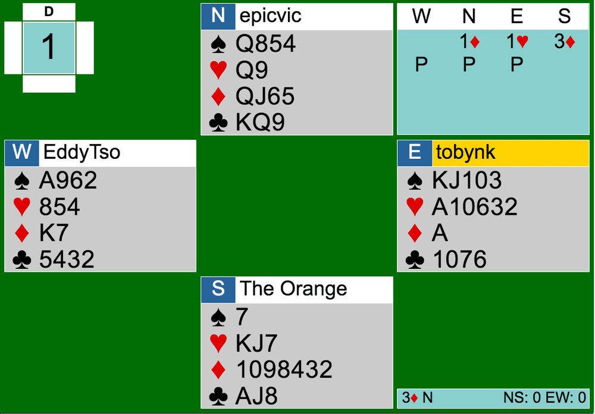

The exciting Cardology team game began under the clear sky on August 8th. Right off the bat, there was a 6-IMPs swing to one of the teams already. What could go wrong so early? We’ll be comparing Board 1 between both tables. If you want a bonus board to look over, I recommend Board 7 (1NT). Anyway, here is the link to the team game: https://webutil.bridgebase.com/v2/tview.php?t=8141-1596927857&u=chlochloee. Follow along!


bidding
Both tables’ auctions begin with a 1D opening by North, which shows an opening hand and 3+ diamonds. East, with an opening hand as well, overcalled 1H. A takeout double can be considered here, but since East is 5-4 in majors and the majors are decent, I would argue this overcall is better.
After the 1H overcall, South at Table 1 bids 2D, which is natural showing support. At table 2, South decides to go up with 3D. It turns out 3D was better because it didn’t allow West to show heart support and compete. The best bid would have been 2H, but we’re not going to get into that here today.
The auction at Table 1 continued with a simple heart raise by South. North then bids 2S. I don’t agree with this bid because North should know that South does not have a four card major. If South had 4+ spades, South would have made a negative double or directly bid 1S instead of 2D. Since NS has a diamond fit already, either North should bid 3D or South corrects North’s 2S bid to 3D. 2S shouldn’t have been the final contract.
At the other table, the bidding ended after the 3D jump.
PLay
The plays at both tables were mostly fine. Here are a few remarks though:
Table 1 (2S by North):
The opening lead of the Ace of hearts was a bit weird. Even though EW does have a heart fit, leading the Ace generally should promise the King. Here, a better lead is the Ace of diamonds.
Trick 8, heart lead by East: North should overtake this with the Queen for down 2 instead of down 3.
Trick 9: West shouldn’t cash the Ace of spades. Instead, give partner a ruff with the club or take the King of diamonds first. Playing a low spade would be fine as well.
2S ended up going down 2, which could have been down 3.
Table 2 (3D by North):
Trick 1: West should have definitely played the Ace of spades. The singleton on the board was not supposed to win.
Trick 3: It didn’t matter in the end, but leading 5th best from Axxxx is odd. I would go for a club to avoid underleading the Ace of hearts.
Everything else played out nicely for a final result of 3D+1.